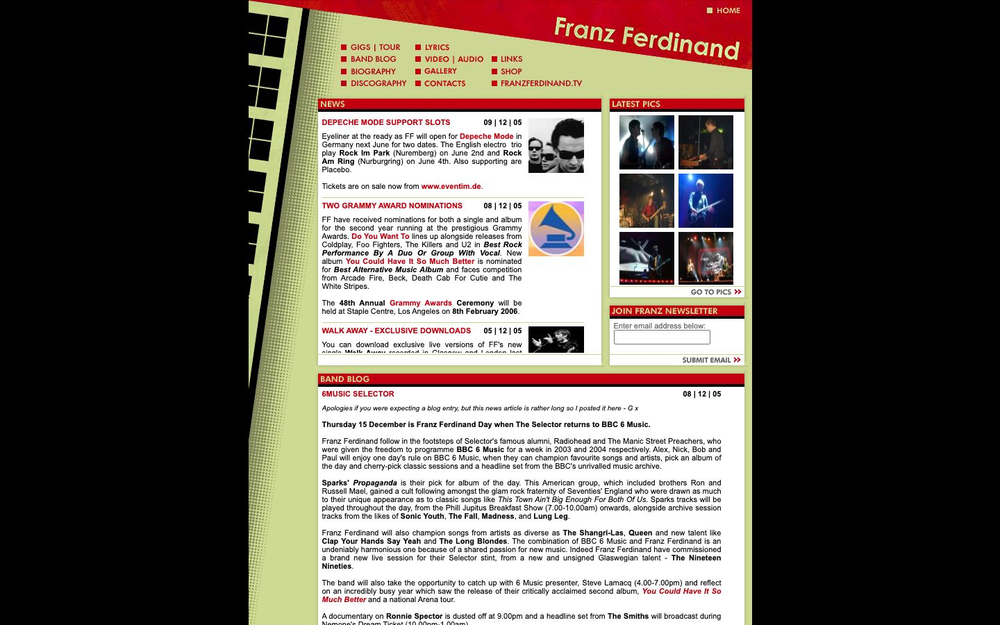

References / Website / 186
Franz Ferdinand website, 2006
The band’s official site from the time of its Rodchenko-inspired second album, archived on 1 January 2006, frames the news in red bars under a tilted red banner.
- Source
- franzferdinand.co.uk (archived copy)
- Creator
- Franz Ferdinand
- Made
- 2006 (capture date)
- Style
- Constructivism (agent-proposed, not yet reviewed by a person)
- Moods
- Graphic, retro, energetic
- Evidence
- Captured from the Internet Archive copy of 1 January 2006 with
tools/capture.mjs(headless Chrome, 1440 × 900) on 28 September 2026 and inspected. Theid_form of the archive URL loads the raw archived page; images loaded. The site is a fixed-width table layout centered on black. - Reviewed
- Rights
- Third-party work, stored with credit for commentary. License: unverified. Rights policy
Context
Franz Ferdinand’s second album, You Could Have It So Much Better (2005), has a cover based on Rodchenko’s 1924 Lengiz poster. Wikipedia.
The archived news items on the page date from 5 to 9 December 2005.
Observed
- A red banner cuts across the top right on a diagonal. “Franz Ferdinand” is set on it in cream sans-serif letters that follow the slope.
- Navigation links are set in small red capitals, each after a small red square.
- Section headings such as “NEWS”, “LATEST PICS”, and “BAND BLOG” are set in white capitals on red bars with a thin black rule below.
- A black stepped tower with square windows and a band of coarse black halftone dots runs down the left edge, leaning slightly.
- The page ground is a pale olive-khaki; the content panels are white. Photographs are in color.
- Body text is small black Arial with red links.
Why it belongs
The site shows how a 2005 web design carried the style: in sliced images for the header and borders, with HTML text left plain. The measurement sees only the HTML: type.uppercaseShare is 0.06 and color.chromaticShare is 0.03, because the capitals and the red areas are mostly images. The screenshot palette finds 3% red.
The khaki ground stands in for aged paper. The measurement counts one hue in the computed styles and two in the screenshot, where the khaki registers.
Borrow
Put the site name on a diagonal band that cuts off one top corner.
Mark each section with a solid red bar that carries its title in white capitals.
Measured
Machine-extracted by tools/extract-traits.js on . Full measurement.
- Type families
- Arial (100%)
- Median radius
- 0 px
- Mean chroma
- 0.02
- Palette
- #000000 80%
- #666666 17%
- #c2000f 3%

